Система беспроводного управления реле через веб-интерфейс и настольное приложение
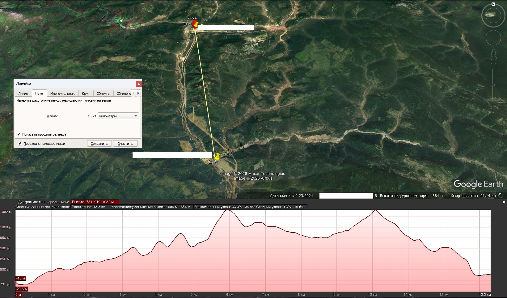
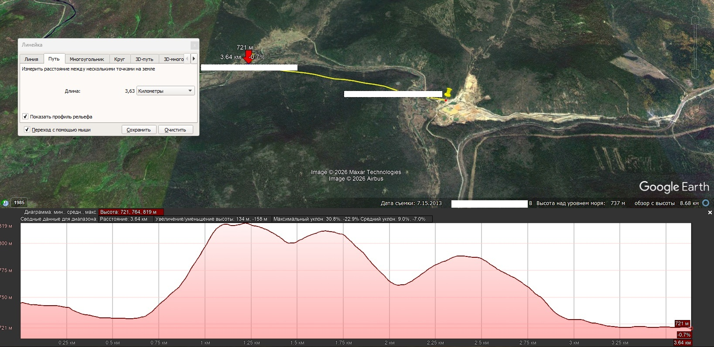


LoRa Мульти-контроллер — это система беспроводного управления реле и мониторинга параметров электросети на удалённых объектах. Система построена на базе современного микроконтроллера ESP32-C6 (передатчик) и Arduino Nano (приёмник), использующих дальнобойный протокол LoRa (модули серии LR03, частота 850-931 МГц). Проект обеспечивает надёжное управление нагрузкой и сбор телеметрии через интуитивно понятное кроссплатформенное настольное приложение.
Силовая часть: - Измерение текущего напряжение сети переменного тока 80-260В - Измерение тока 0 — 100А - Измерение активной мощности 0 — 22КВт - Измерение потребленной электроэнергии - Точность измерения 1% - Рабочая частота 45-65Гц - Диапазон температуры от -40 до +50
Температура: - Диапазон измеряемых температур -55°C до +125°C - Точность ±0.5°C (в диапазоне -10°C до +85°C)
GPS: - Рабочий температурный диапазон -40°C ... +85°C - Погрешность позиционирования 2.5 метра
Реле: - Тип нагрузки AC (переменный ток) - Коммутируемое напряжение 24 — 380 VAC - Максимальный ток нагрузки 25А (AC) - Минимальный ток нагрузки 50 — 100 мА - Время включения ≤ 10 мс (полупериод) - Время выключения ≤ 10 мс - Рабочая температура -30°C ... +80°C
LoRa: - Рабочая частота 850-931 МГц - Мощность 28dBm - Рабочая температура -40°C ... +85°C - Антенна усиление 5 дБи
┌─────────────────────────────────────────────────────────────────┐
│ СИСТЕМА LoRa │
│ │
│ ┌──────────────┐ LoRa (UART) ┌──────────────┐ │
│ │ TX (ESP32-C6)│═══════════════════════════▶│ RX (Arduino) │ │
│ │ Передатчик │ 9600 baud │ Приёмник │ │
│ │ │◀═══════════════════════════│ │ │
│ └──────┬───────┘ └───────┬──────┘ │
│ │ │ │
│ │ WiFi │ Реле │
│ │ │ LED │
│ ▼ ▼ │
│ ┌─────────────────────────────────────────────────────────┐ │
│ │ ВЕБ-ИНТЕРФЕЙС / API │ │
│ │ • Настройка WiFi │ │
│ │ • OTA обновление │ │
│ │ • Мониторинг │ │
│ │ • Управление реле │ │
│ └─────────────────────────────────────────────────────────┘ │
│ │ │
│ TCP/HTTP │
│ ▼ │
│ ┌─────────────────────────────────────────────────────────┐ │
│ │ НАСТОЛЬНОЕ ПРИЛОЖЕНИЕ (Monitoring LoRa) │ │
│ │ • Автоматическое сканирование сети │ │
│ │ • Мониторинг в реальном времени │ │
│ │ • Управление всеми приёмниками │ │
│ │ • Просмотр консоли │ │
│ │ • Настройка конфигурации │ │
│ └─────────────────────────────────────────────────────────┘ │
│ │
└─────────────────────────────────────────────────────────────────┘
Платформа: ESP32-C6
Функции: - Подключение к WiFi сети (режим клиента) или создание точки доступа - Веб-интерфейс для настройки WiFi и OTA обновления - Онлайн-монитор: Просмотр статуса приёмников через браузер - OTA (Over-The-Air) обновление прошивки - Поддержка до 10 приёмников - Авторизация пользователей - NTP-синхронизация времени - REST API для интеграции с настольным приложением
Режимы работы WiFi:
- Режим точки доступа: Создаёт сеть LoRaTransmitterAP (пароль: 12345678)
- Режим клиента: Подключается к существующей WiFi сети
Платформа: Arduino Nano (или совместимая)
Компоненты: - Реле (управление нагрузкой) - Светодиод WS2812 для индикации состояния - Кнопка теста связи - PZEM-004T: Измерение напряжения, тока, мощности, энергии - DS18B20: Датчик температуры - GPS: Модуль GPS для определения координат
Функции: - Приём команд от передатчика по LoRa - Управление реле (ВКЛ/ВЫКЛ) - Визуальная индикация состояния - Сбор и отправка данных сенсоров (температура, координаты, параметры сети) - Периодическая отправка статуса - Тест связи по кнопке
Платформа: Кроссплатформенное (Windows, Linux, macOS)
Технологии: Python 3, tkinter, requests, configparser
Функции: - Автоматическое сканирование сети для поиска контроллера - Мониторинг состояния всех приёмников в реальном времени (включая данные сенсоров) - Полное управление приёмниками (включение/выключение реле) на отдельной вкладке - Полноценный CRUD для приёмников: добавление, редактирование, удаление приёмников - Настройки WiFi подключения контроллера через веб-интерфейс - OTA обновление прошивки через веб-интерфейс - Просмотр консольного вывода контроллера в реальном времени - Автоматическое обновление данных (настраиваемый интервал) - Хранение настроек в конфигурационном файле
TX_test2/TX_test2.inoИнструменты → Плата → ESP32 Dev Module (или соответствующую вашу плату)Инструменты → Порт — выберите COM-портСкетч → ЗагрузитьОткройте файл прошивки:
RX/RX.ino
Выберите плату:
Инструменты → Плата → Arduino Nano
Выберите процессор:
Инструменты → Процессор → ATmega328P (Old Bootloader) или ATmega328P
Выберите порт:
Инструменты → Порт — выберите COM-порт
Загрузите прошивку:
Скетч → ЗагрузитьПри первом запуске передатчик работает в режиме точки доступа:
http://192.168.4.1После настройки WiFi (режим клиента):
Из таблицы DHCP вашего роутера
Откройте браузер и введите IP адрес
Приёмники добавляются и настраиваются через настольное приложение на вкладке "Управление приемниками":
Важно: Адреса приёмников должны соответствовать адресам, заданным в прошивке RX (по умолчанию: 0x01, 0x02)
Настольное приложение Monitoring LoRa предоставляет удобный интерфейс для мониторинга и управления системой LoRa Мульти-контроллер. В этом разделе приведена подробная инструкция от установки до полноценной работы с приложением.
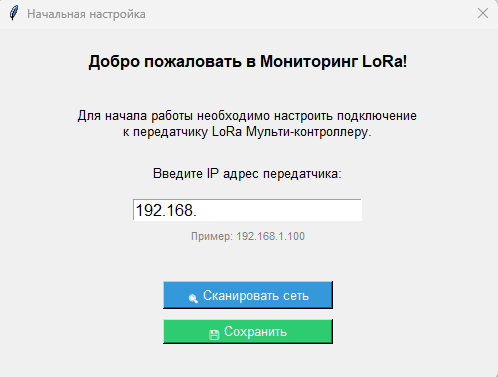
При первом запуске приложение не имеет конфигурации и предлагает два способа настройки подключения.
192.168.4.1)Сохранить 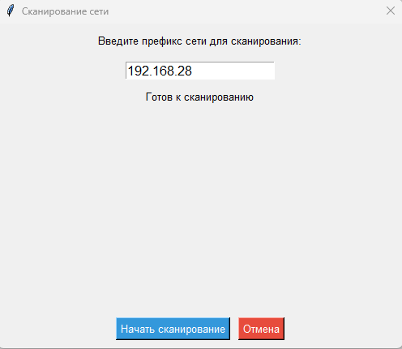
192.168.28)Начать сканированиеПроцесс сканирования:
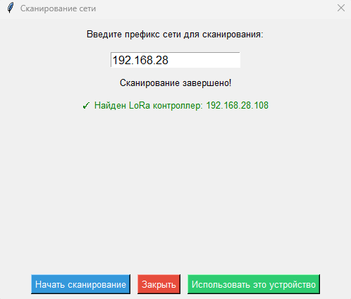
┌─────────────────────────────────────────────────────────┐
│ Сканирование сети │
│ │
│ Введите префикс сети: │
│ │
│ ┌─────────────────────────────────────────────┐ │
│ │ 192.168.1 │ │
│ └─────────────────────────────────────────────┘ │
│ │
│ ✗ LoRa контроллер не найден в указанной сети │
│ │
│ [Начать сканирование] │
│ │
└─────────────────────────────────────────────────────────┘
Возможные причины: - Контроллер не включён или не в сети - Неправильный префикс сети - Брандмауэр блокирует соединение - Контроллер работает в режиме точки доступа (AP)
Решения: 1. Проверьте правильность префикса сети 2. Убедитесь, что контроллер включён 3. Попробуйте ручной ввод IP 4. Проверьте подключение к той же сети
После настройки подключения откроется главное окно приложения:
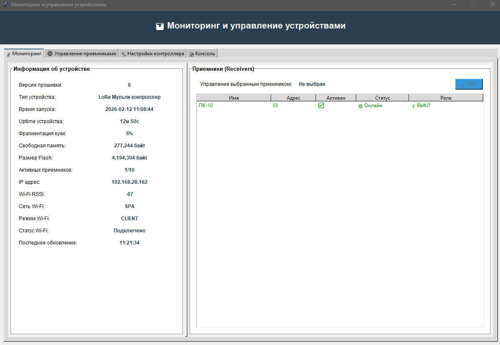
Приложение имеет структуру с вкладками для удобного доступа к различным функциям.
Вкладка мониторинга отображает общую информацию о системе и статус всех приёмников.
Секция "Информация об устройстве":
| Параметр | Описание |
|---|---|
| Версия прошивки | Текущая версия прошивки TX |
| Устройство | Название устройства |
| Время запуска | Время когда устройство было запущено |
| Uptime устройства | Время сколько устройство в работе |
| Фрагментация кучи | Процент фрагментации памяти |
| Свободная память | Кол-во свободной памяти |
| Размер Flash | Общий объем ПЗУ |
| Активных приемников | Кол-во активных (в сети) на данный момент приемников |
| IP адрес | Сетевой адрес контроллера |
| Wi-Fi RSSI | Уровень сигнала Wi-Fi на контроллере |
| Сеть Wi-Fi | Название сети к которой подключен контроллер |
| Режим Wi-Fi | Режим в котором работает контроллер (клиент или AP) |
| Статус Wi-Fi | Подключен ли Wi-Fi в данный момент |
| Последнее обновление | Время последних данных от контроллера |
Секция "Приемники (Receivers)":
Таблица со списком всех настроенных приёмников:
| Колонка | Описание |
|---|---|
| Имя | Имя приёмника (из конфигурации) |
| Адрес | Адрес приемника (из конфигурации) |
| Статус | Онлайн/Офлайн |
| Реле | Включено/Выключено |
Управление из вкладки мониторинга:
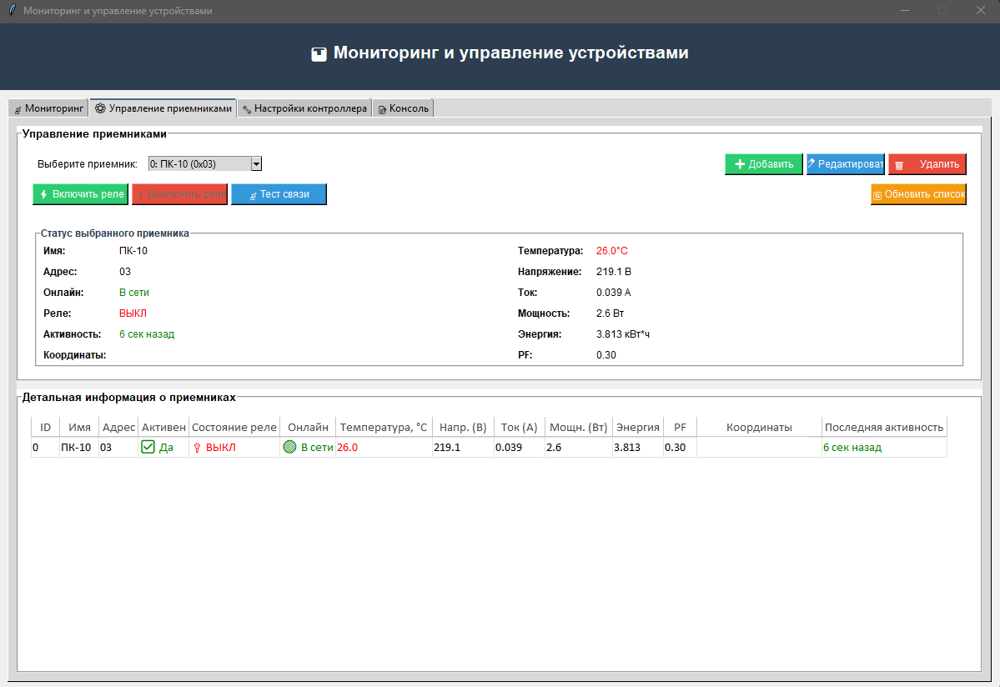
Функции:
| Кнопка | Функция | Описание |
|---|---|---|
➕ Добавить |
Добавление нового приёмника | Открывает диалог для создания нового приёмника с указанием имени и HEX-адреса (01-FE) |
✏️ Редактировать |
Изменение приёмника | Открывает диалог редактирования выбранного приёмника с отображением текущего статуса (онлайн/офлайн, состояние реле, последняя активность) |
🗑️ Удалить |
Удаление приёмника | Удаляет выбранный приёмник с подтверждением (с предупреждением о перестройке ID) |
📡 Тест связи |
Проверка связи | Отправляет команду теста связи выбранному приёмнику |
Выбор приёмника:
Выпадающий список для быстрого выбора приёмника
Отображение статуса выбранного приёмника
Управление реле:
Нажмите [ВКЛ] для включения реле
Нажмите [ТЕСТ] для проверки связи с конкретным приемником
Таблица со списком всех настроенных приёмников:
| Колонка | Описание |
|---|---|
| ID | Порядковый номер приемника в приложении |
| Имя | приёмника (из конфигурации) |
| Адрес | Адрес приемника (из конфигурации) |
| Состояние реле | Включено/Выключено |
| Онлайн | Онлайн/Офлайн |
| Температура | Данные с датчика температуры |
| Напр. (В) | Текущее напряжение сети 220В |
| Ток (А) | Потребляемый ток на управляемой розетки |
| Мощн.(Вт) | Текущаяя мощность розетки |
| Энергия | Сумарно накопительная энергия кВт*ч |
| PF | Коэфициент качества сети 220в от 0 до 1 чем выше тем лучше |
| Координаты | Текущие координаты приемника |
| Последняя активность | Время сколько прошло с момента получения последней информации от приемника |
Статус:
Сводная информация о выбранном приемнике
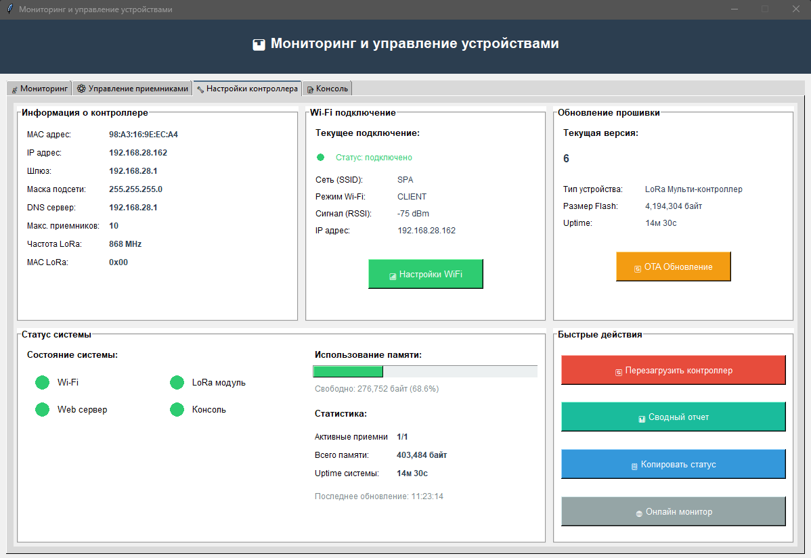
Функции:
Подтвердите действие
Настройки Wi-Fi:
Нажмите для открытия веб страницы где можно выбрать режим работы Wi-Fi (client/ap)
OTA Обновление:
Нажмите для открытия веб страницы обновления прошивки контроллера
Сводный отчет:
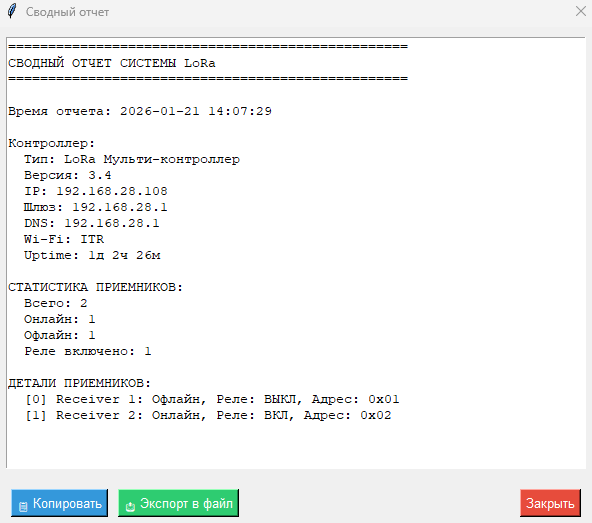
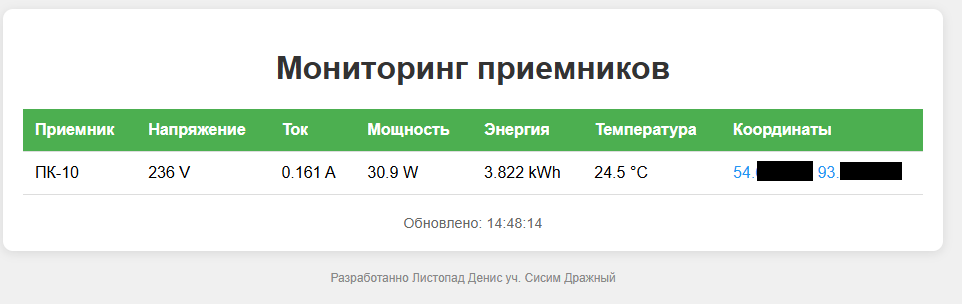
Информация о контроллере
| Параметр | Описание |
|---|---|
| MAC адрес | физический адрес контроллера для локальной сети |
| IP адрес | Сетевой адрес контроллера |
| Шлюз | IP адрес шлюза (он же NTP сервер по умолчанию) |
| Маска подсети | Сетевая маска подсети |
| Макс. приемников | Максимальное кол-во приемников которые можно подключить к данному контроллеру |
| Частота LoRa | Частота на которой работает контроллер |
| MAC адрес LoRa | физический адрес контроллера по которому связываются приемники |
Статус системы
Сводная информация о работе самого контроллера. - Статусы подсистем (Wi-Fi, LoRa модуль, Web сервер, Консоль) - Прогресс бар использования IRAM контроллера (при достижении более 80% контроллер автоматически перезагрузится) - Статистика системы (кол-во активных приемников/всего приемников, кол-во IRAM общее, Uptime контроллера)
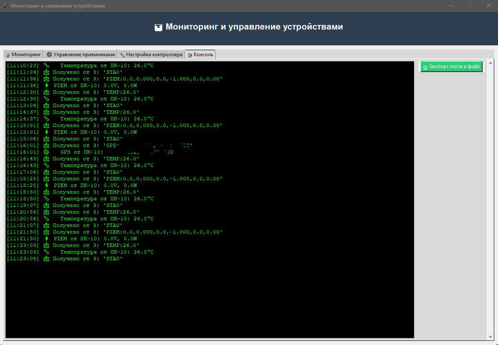
Функции:
Прокрутка к последнему сообщению
Сохранение в файл:
Приложение хранит настройки в конфигурационном файле:
Windows:
%APPDATA%\LoraMonitor\lora.ini
Linux/Mac:
~/.loramonitor/lora.ini
Структура файла:
[DEFAULT]
base_url = http://192.168.*.*
last_scan_network = 192.168.*
update_interval = 3000
Параметры:
| Параметр | Описание | По умолчанию |
|---|---|---|
| base_url | URL контроллера | пусто |
| last_scan_network | Префикс сети для сканирования | 192.168.* |
| update_interval | Интервал обновления (мс) | 3000 |
Настольное приложение взаимодействует с контроллером через следующие HTTP API:
| Метод | Эндпоинт | Описание |
|---|---|---|
| GET | /status |
Получение информации об устройстве (JSON, без авторизации) |
| GET | /all_receivers_status |
Получение статуса всех приёмников (JSON) |
| GET | /console_json |
Получение консольного вывода (JSON, без авторизации) |
| GET | /wifi_settings |
Получение настроек WiFi (HTML) |
| GET | /ota_update |
Страница OTA обновления (HTML) |
| GET | /ui_lock_status |
Статус блокировки интерфейса (locked/unlocked) |
| GET | /monitor |
Публичная страница мониторинга (HTML) |
| Метод | Эндпоинт | Описание |
|---|---|---|
| GET | /relay_on |
Включение реле (параметр: receiver - индекс) |
| GET | /relay_off |
Выключение реле (параметр: receiver - индекс) |
| GET | /test_connection |
Тест связи (параметр: receiver - индекс) |
| Метод | Эндпоинт | Описание |
|---|---|---|
| GET | /reboot |
Перезагрузка контроллера |
| POST | /update |
Загрузка файла прошивки (OTA) |
| GET | /scan_wifi |
Сканирование доступных WiFi сетей (JSON) |
| POST | /save_wifi |
Сохранение настроек WiFi |
| Метод | Эндпоинт | Описание |
|---|---|---|
| POST | /login |
Авторизация через веб-форму |
| POST | /api/login |
API авторизация для приложения |
| GET | /logout |
Выход из системы |
| Метод | Эндпоинт | Описание |
|---|---|---|
| GET | /api/v1/receivers |
Получение списка всех приёмников |
| POST | /api/v1/receivers |
Создание нового приёмника (JSON) |
| PUT | /api/v1/receivers |
Обновление приёмника (JSON) |
| DELETE | /api/v1/receivers |
Удаление приёмника (JSON) |
| POST | /api/v1/receivers/bulk |
Массовое обновление приёмников (JSON) |
| POST | /api/v1/receivers/test |
Тест связи с приёмником (JSON) |
| POST | /api/v1/receivers/reset |
Сброс настроек приёмников |
curl http://192.168.28.108/status
{
"receivers": [
{
"name": "ПК-10",
"address": "0x03",
"relay_state": false,
"online": true,
"last_activity": 6432639,
"last_activity_ago": 86,
"temperature": 26,
"voltage": 234.7,
"current": 0,
"power": 1.5,
"energy": 3.815,
"frequency": 50,
"pf": 1,
"latitude": 0,
"longitude": 0
}
],
"wifi_mode": "CLIENT",
"ssid": "SPA",
"wifi_rssi": -68,
"wifi_connected": true,
"ip_address": "192.168.28.162",
"mac_address": "98A3169EECA4",
"mac_address_formatted": "98:A3:16:9E:EC:A4",
"firmware_version": "6",
"device_type": "LoRa Мульти-контроллер",
"build_date": "Feb 7 2026 22:27:04",
"active_receiver_count": 1,
"max_receivers": 10,
"free_heap": 269800,
"heap_size": 403484,
"heap_fragmentation": 8,
"flash_size": 4194304,
"ota_in_progress": false,
"uptime": 6519347,
"uptime_seconds": 6519
}
curl http://192.168.28.108/relay_on?receiver=0
curl http://192.168.28.108/api/v1/receivers
{
"count": 1,
"max_count": 10,
"receivers": [
{
"id": 2,
"name": "ПК-10",
"address": "0x03",
"enabled": true,
"online": true,
"relay_state": false,
"last_activity": 6559083
}
],
"memory_usage": {
"free_heap": 288732,
"fragmentation": 0
}
}
curl -X POST http://192.168.28.108/api/v1/receivers \
-H "Content-Type: application/json" \
-d '{"name": "Баня", "address": "05"}'
curl -X POST http://192.168.28.108/api/v1/receivers/test \
-H "Content-Type: application/json" \
-d '{"address": "05"}'
curl http://192.168.28.108/console_json
{
"console_output": "2026-02-12 10:30:15 === LoRa Мульти-контроллер ===\nВерсия: 6\n..."
}
| Команда | Описание |
|---|---|
RON |
Включить реле |
ROF |
Выключить реле |
TST |
Тест связи |
TEMP: |
Префикс данных температуры (отправляет RX) |
GPS: |
Префикс данных GPS (lat,lng, отправляет RX) |
PZEM: |
Префикс данных PZEM (V,A,W,kWh,Hz,PF, отправляет RX) |
| Ответ | Описание |
|---|---|
OK1 |
Реле включено успешно |
OK0 |
Реле выключено успешно |
STA1 |
Статус: реле включено |
STA0 |
Статус: реле выключено |
TSTOK |
Тест связи успешен |
ACKT |
Подтверждение получения температуры |
ACKG |
Подтверждение получения координат GPS |
ACKP |
Подтверждение получения данных PZEM |
[XX]MESSAGE\r\n
Где:
- XX — HEX адрес приёмника (01, 02, 0A, и т.д.)
- MESSAGE — команда или ответ
- \r\n — конец строки
| Адрес | Устройство |
|---|---|
| 0x00 | Контроллер (TX) |
| 0x01 | Приёмник 1 |
| 0x02 | Приёмник 2 |
| ... | ... |
Светодиод WS2812 отображает состояние приёмника:
| Состояние | Цвет | Режим |
|---|---|---|
| Ожидание | Синий | Медленное мигание (каждые 2 сек) |
| Реле включено | Красный | Постоянный |
| Тест связи | Жёлтый | Мигание |
| Успех | Зелёный | 2 секунды |
| Ошибка / Таймаут | Красный | Быстрое мигание (5 раз) |
.bin файл новой прошивки⚠️ Важно: Не отключайте питание во время обновления!
TX/TX.inoСкетч → Экспорт бинарного файла.bin через веб-интерфейсСимптомы: - Устройство не отвечает - В консоли сообщение "Не удалось подключиться к WiFi"
Решения: 1. Проверьте правильность SSID и пароля 2. Убедитесь, что роутер включён 3. Проверьте уровень сигнала 4. Сбросьте настройки WiFi и настройте заново
Симптомы: - Статус "Офлайн" в приложении - Нет ответа на команды
Решения: 1. Проверьте питание приёмника 2. Проверьте подключение LoRa модуля 3. Проверьте соответствие адресов (TX и RX) 4. Проверьте светодиодную индикацию 5. Нажмите кнопку TEST на приёмнике для теста связи
Симптомы: - "Ошибка подключения" при запуске - Сканирование не находит устройство
Решения: 1. Проверьте, что контроллер включён 2. Убедитесь, что компьютер и контроллер в одной сети 3. Проверьте брандмауэр (должен разрешать входящие соединения) 4. Попробуйте ручной ввод IP адреса 5. Проверьте IP адрес в таблице DHCP роутера
HEX адреса: Приёмники адресуются в HEX формате (01, 0A, 1F и т.д.)
Фрагментация памяти: ESP32-C6 автоматически перезагружается при фрагментации памяти >80%
Версия EEPROM: При изменении структуры данных необходимо обновить CONFIG_VERSION в коде
Совместимость приёмников: Код RX и TX должны использовать совместимый протокол связи
Многопоточное сканирование: Приложение использует 20 потоков для параллельного сканирования сети
Кроссплатформенность: Настольное приложение использует os.name для определения ОС
Автоматическое обновление: Приложение обновляет данные каждые 3 секунды (настраивается)
LoRa-Multi-Controller/
│
├── README.md # Этот файл
├── app.py # Настольное приложение (Python/tkinter)
│
├── TX_Last/
│ └── TX_Last.ino # Прошивка передатчика (ESP32-C6)
│
└── RX_Last/
└── RX_Last.ino # Прошивка приёмника (Arduino)
Пообъектная именная лицензия
Автор: Листопад Денис уч. Сисим Дражный
Дата обновления: 12 февраля 2026 г.